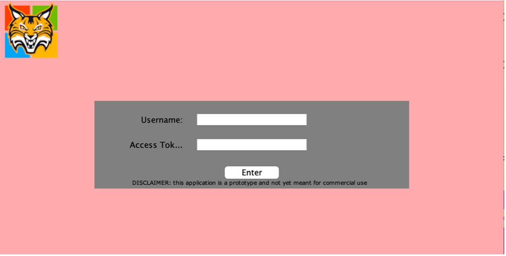

This is a prototype application that can be used by anyone! The goal is to help users like you easily create and connect new git repositories!
The application will first prompt you to enter your username (for GitHub) and a unique, personal GitHub API token. This token essentially functions as the password for your account so be sure to keep that safe!
Once you hit ‘Enter’, the next screen will ask you details about the repository you wish to create.
‘Repository File Path’ is where you enter the information about where the existing project is on your computer. This allows our application local access to what you want hosted on GitHub.
‘Repository Name’ asks for a title of the project you are working on. This name can be the same as the file you were already working under or something new, just make sure it matches your project so other can easily search for it!
‘Repository Description’ allows you to write a few words or a short paragraph outlining your project. This allows others to quickly understand what it is and how it is doing it. This should not be long since your README.md will describe your project in greater detail.
Finally, you are required to set the visibility of your project. You can choose ‘Public’, all GitHub users can view your project, or ‘Private’, only you can see your project on GitHub.
Once this is all complete, click the ‘Create’ button. Behind the scenes, activating this button generates your entire repository. This includes pushing all your files, creating an initial commit, writing a complete .gitignore and empty README.md, and generating the link to your new repository.
GitWizard handles everything git related so you don’t have to!